HAM Fair Album 2001
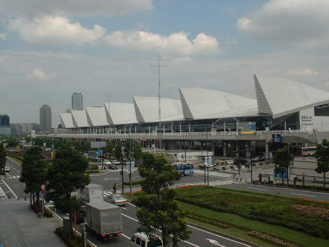
EYEBALL QSO IN パシフィコ横浜 2001
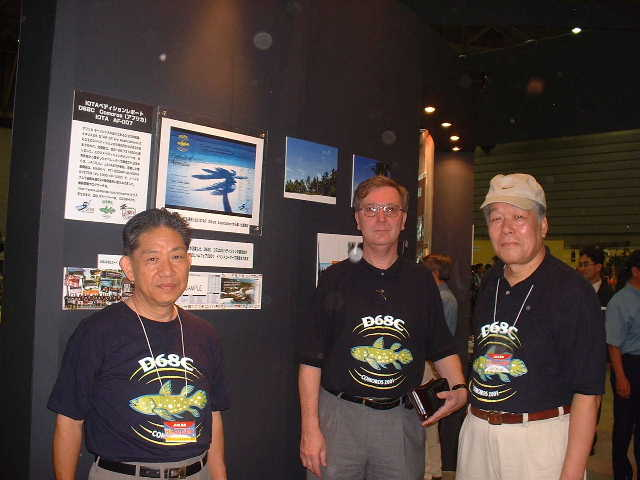
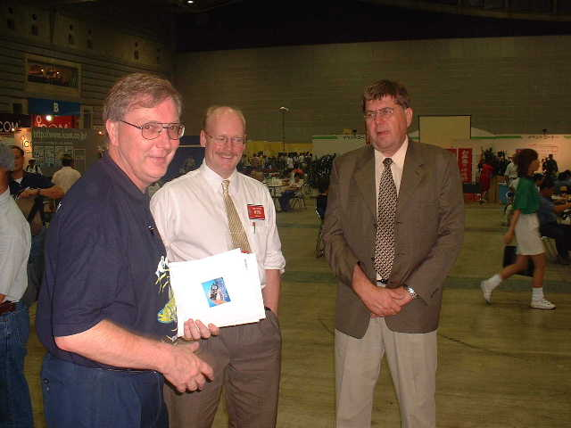
D68Cの参加メンバーJA3AER PE9PE JA1RJU / PE9PE NT1N(ARRL) OH2BH
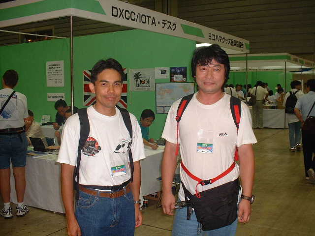
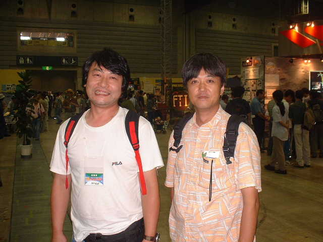
再びノースクックのPediを予定しているJI1NJC(ZK1NJC) / JI1NJCとJL1IHE(ex 7Q7JA)
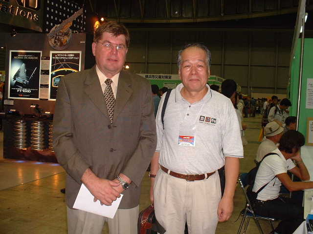
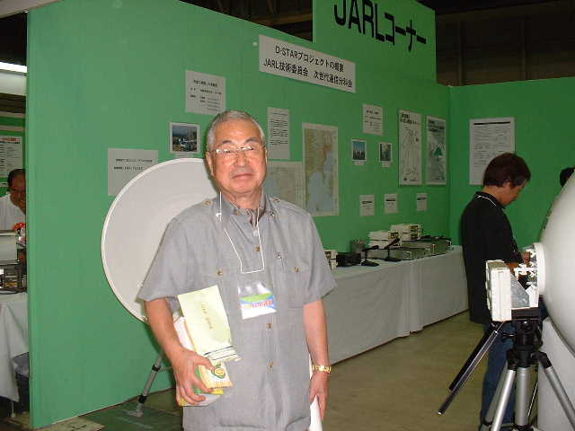
FT-847+VL1000+M2 11eleで6mにもQRVを始めたOH2BH / 6mのPediでお馴染みのJA1UT
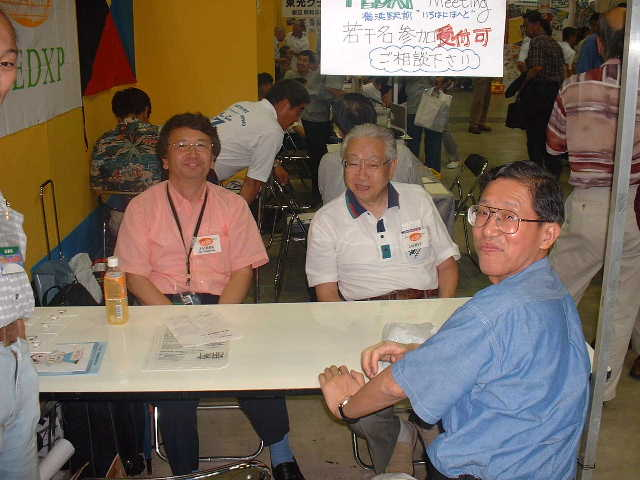
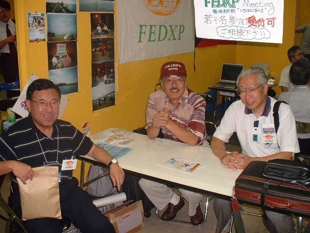
FEDXPのブースでJA1BRK JA1HYF JA1WPX JA1HGY JK1OPL
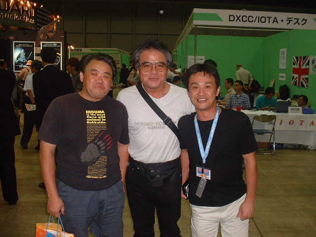
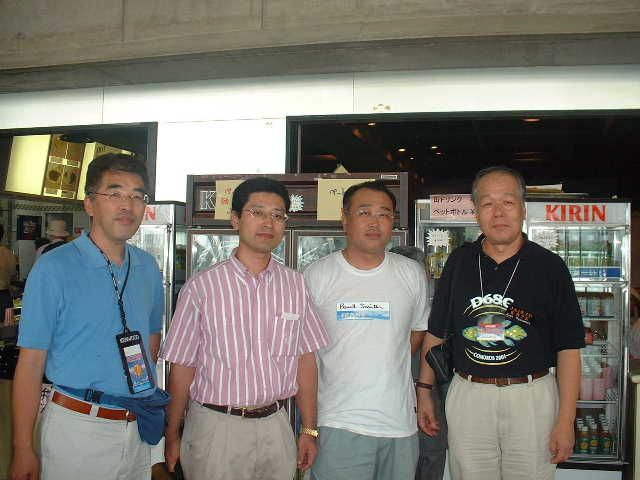
沖縄からアクティブなJI1CQA JR6GV JM1KNQ / 九州・大分から参加の各局とJA1RJU
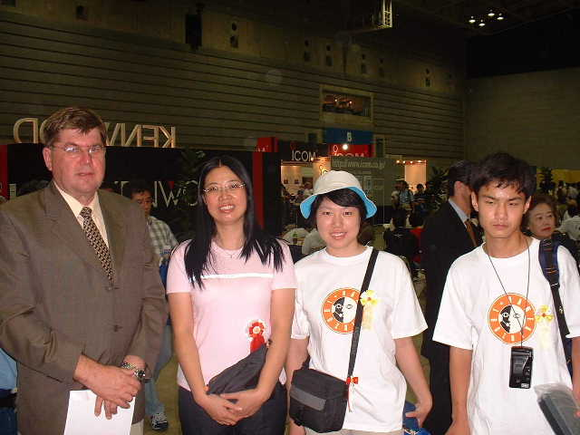
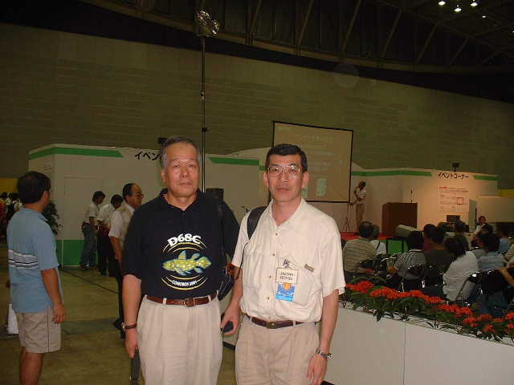
中国・北京から参加したBY1SKのメンバーとOH2BH / JA1RJUとJA2SWH(ex 4S7YSG)
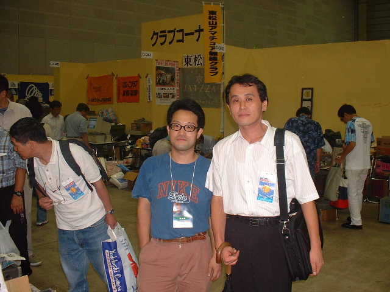
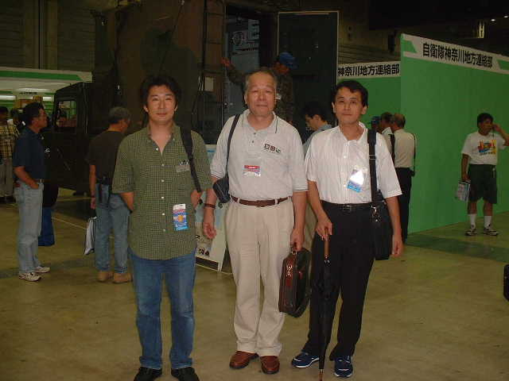
FO0KOJ & H40OOのPediでお馴染みのJK7TKE 右はJI1UHZ / JP1LRT JA1RJU JI1UHZ
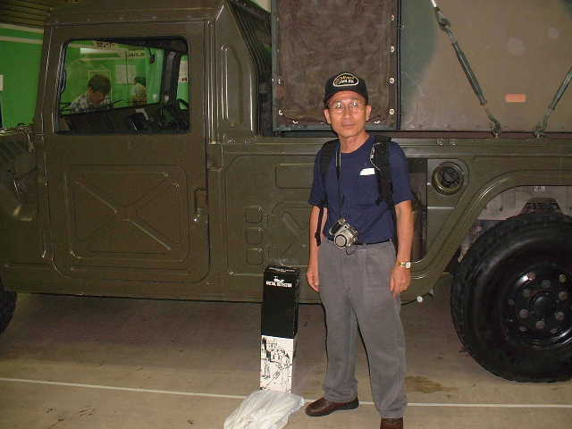
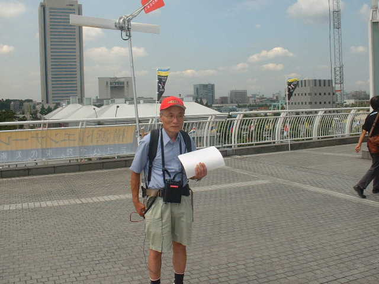
UHF/SHFのスペシャリスト、大分のJA6LXR / 風力発電機を背負いQRV?していたJA3CKF
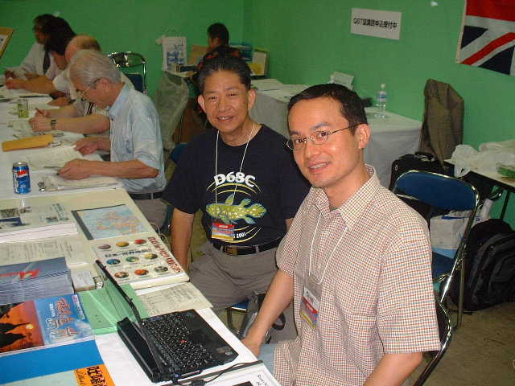
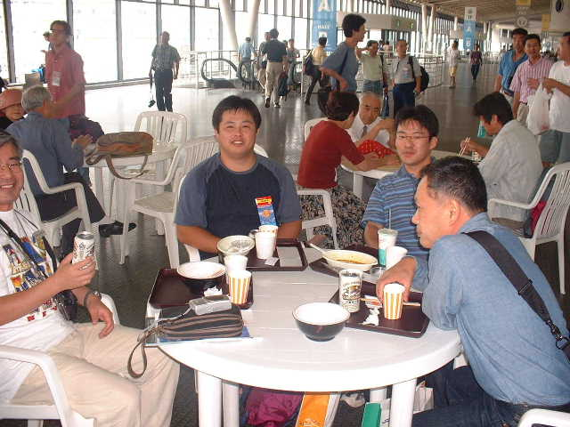
IOTAのブースでJA3AER JQ1HBT / 九州の6m DXers 中央はJO6EDD
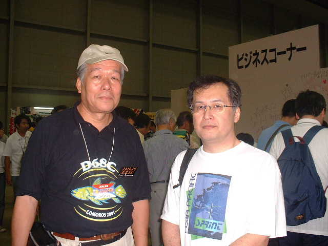

JA1RJU JE1JKL(ex 9M2NK & 9M2JKL) / 6mのJA-W初QSOの記録を持つJA1AUH
Ham Fair 2003
Ham Fair 2002
Ham Fair 2001
Ham Fair 2000
Ham Fair 1999
 |
Flash Newsへ |